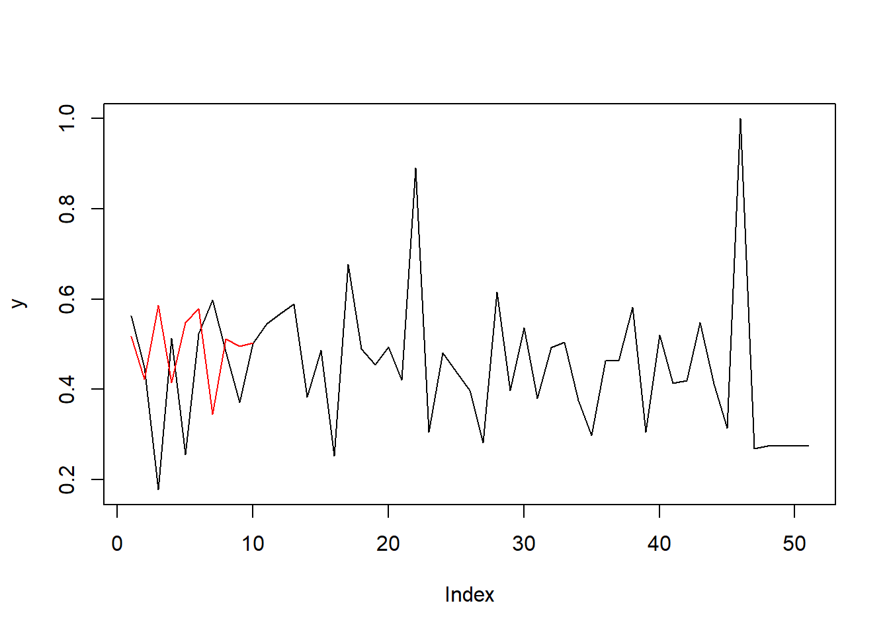

Capítulo 3 Unidad 3
Actividad 3
Se debe documentar la descomposiciòn, la estacinariedad y la diferenciaciòn
Descomposión
Se realiza grafica de descomposicion de:
- Tendencia.
- Estacionalidad
- Residuo
## Warning: package 'ggfortify' was built under R version 4.2.3## Registered S3 methods overwritten by 'ggfortify':
## method from
## autoplot.Arima forecast
## autoplot.acf forecast
## autoplot.ar forecast
## autoplot.bats forecast
## autoplot.decomposed.ts forecast
## autoplot.ets forecast
## autoplot.forecast forecast
## autoplot.stl forecast
## autoplot.ts forecast
## fitted.ar forecast
## fortify.ts forecast
## residuals.ar forecastautoplot(fit)+labs(title = "Descomposición de la serie de tiempo",
x="tiempo",
y="Valor USD/Kilo",
colour="gears")+
theme_bw()## Warning: Removed 24 rows containing missing values or values outside the scale range
## (`geom_line()`).
Se observa que hay tendecia al inicio y final de la serie. Con el fin de evaluar la estacionalidad se debe realizar grafica y prueba de Dickey-Fuller
Estacionalidad

Prueba de Dickey- Fuller
##
## Augmented Dickey-Fuller Test
##
## data: precios_ts
## Dickey-Fuller = -3.2774, Lag order = 4, p-value = 0.08223
## alternative hypothesis: stationary
Dado que el valor p (0.08223) es mayor que un nivel de significancia común como 0.05, no hay suficiente evidencia para rechazar la hipótesis nula de que la serie de tiempo tiene raíces unitarias, lo que sugiere que la serie de tiempo es no estacionaria. Sin embargo, es importante tener en cuenta que el valor p está cerca del nivel de significancia, por lo que podría haber una tendencia hacia la estacionariedad, como lo menciona el resultado “stationary”
Ante este resultado la serie de tiempo se considerarà no estacionaria
Con el fin de identificar la necesidad de validar la necesidad de realizar un ajuste de estacionalidad se hace la prueba ndiffs. el resultado es uno, por lo tanto se realizarà una transformaciòn
## [1] 1al realizar un proceso de diferenciaciòn se valida, que ya no es necesario realizar una nueva
## [1] 0Se tiene como resultado una serie de tiempo estacional y se puede apreciar al comparar los graficos antes y despues del ajuste diferenciado.
par(mfrow=c(2,2),mar=c(4,4,4,1)+.1)
plot(precios_ts,ylab="USD/Kilo")
acf(precios_ts,main="Serie No Estacionaria")
plot(seriedif)
acf(seriedif,main="Serie Estacionaria")
## Fecha Año Mes Año-mes
## Length:73 Min. :2010 Length:73 Length:73
## Class :character 1st Qu.:2011 Class :character Class :character
## Mode :character Median :2013 Mode :character Mode :character
## Mean :2013
## 3rd Qu.:2014
## Max. :2016
## FECHA_PRESENTACION VALOR_FOB_USD PESTICIDA
## Min. :40210 Min. :2.828 Length:73
## 1st Qu.:40756 1st Qu.:3.977 Class :character
## Median :41306 Median :4.554 Mode :character
## Mean :41304 Mean :4.484
## 3rd Qu.:41852 3rd Qu.:4.922
## Max. :42401 Max. :7.006